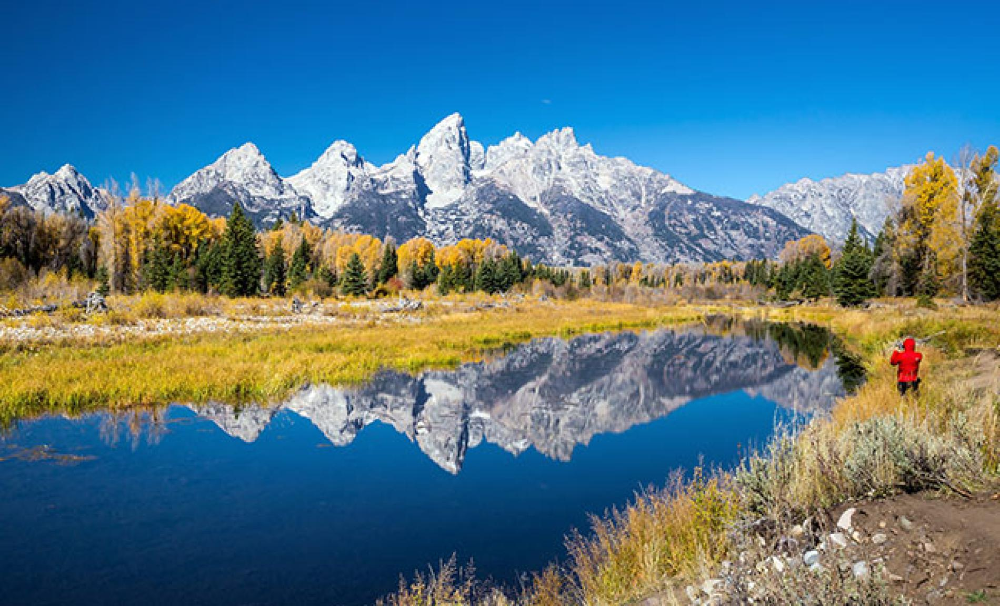

Swimming has been a massive part of my life since I was 7. All through highschool I swam 25+ hours a week, and grew immensely because of it. At the end of my senior year, I accumulated 5 school records, and 3 state records, as well as a few different awards from the state and my school. I signed to swim on scholarship for BYU, and am currently halfway through my sophmore year. Unfortunately I was injured most of my freshman year, but have recovered and am looking forward to our championship meet in February.
Jump to ResumeMy family is a huge part of my life. They are my best friends and confidantes. I grew up with them in Draper Utah, but this fall they moved to Jackson Hole, Wyoming. It has been difficult to live so far away from them, but I am very grateful to now call such a beautiful place home.
